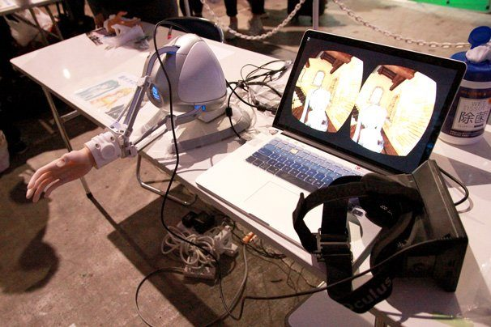
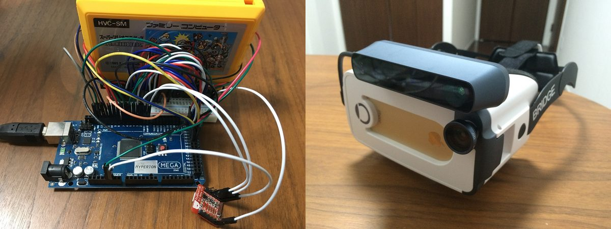
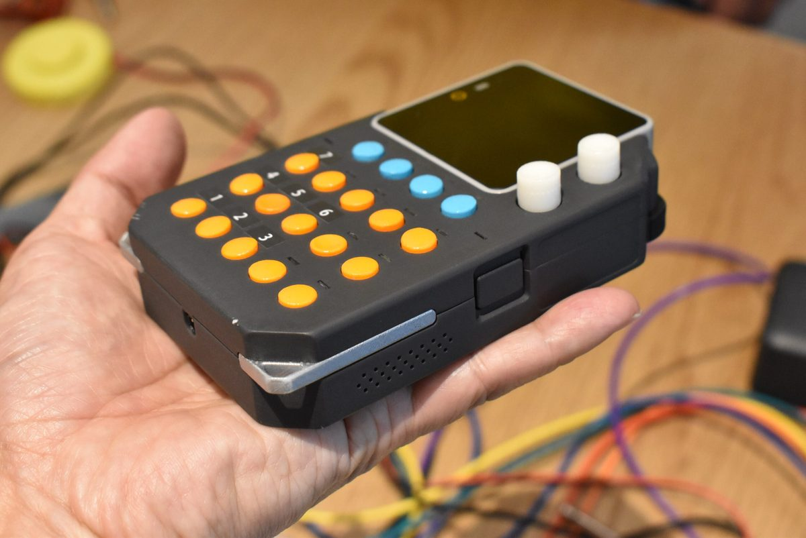
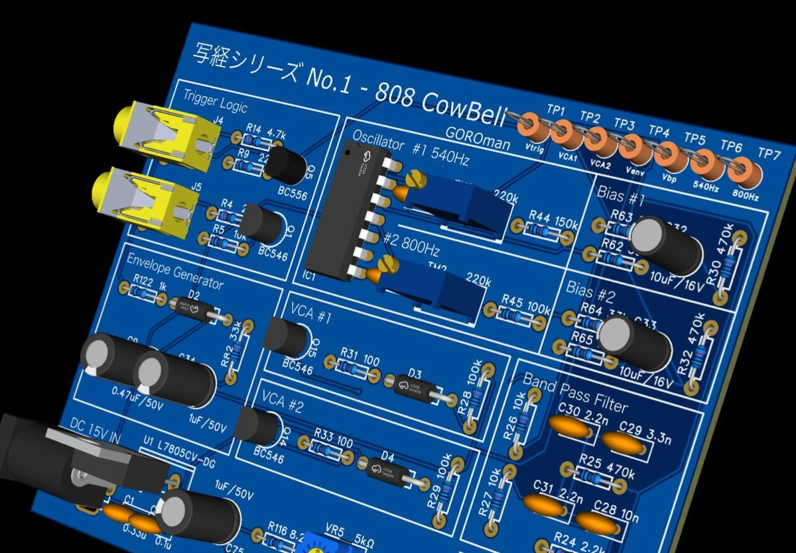
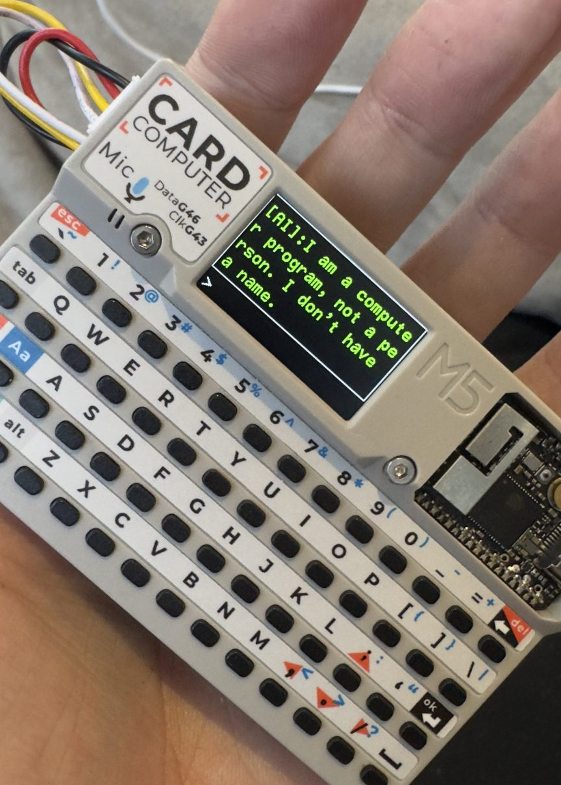
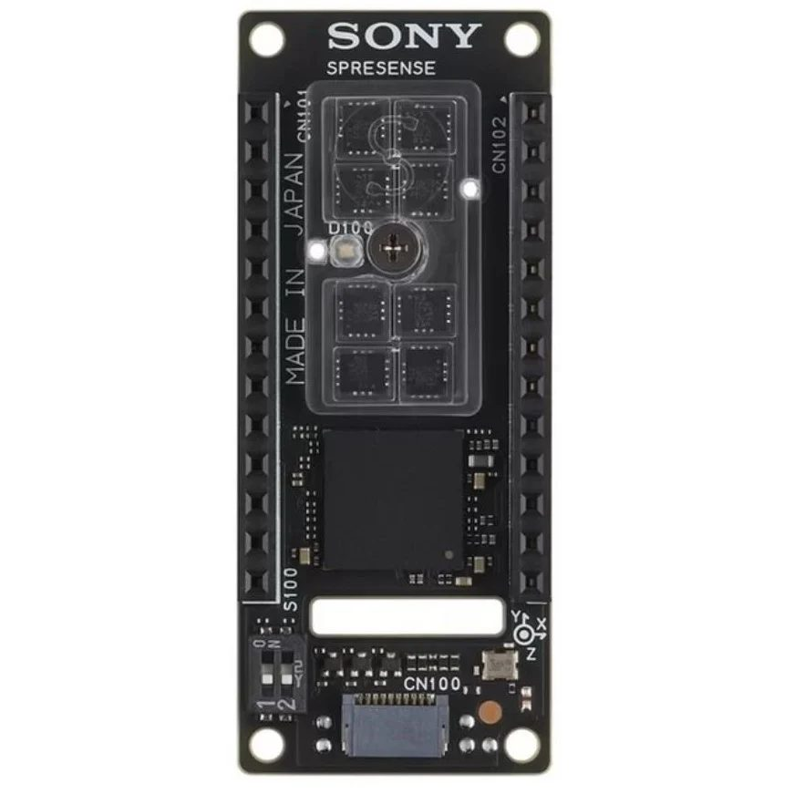
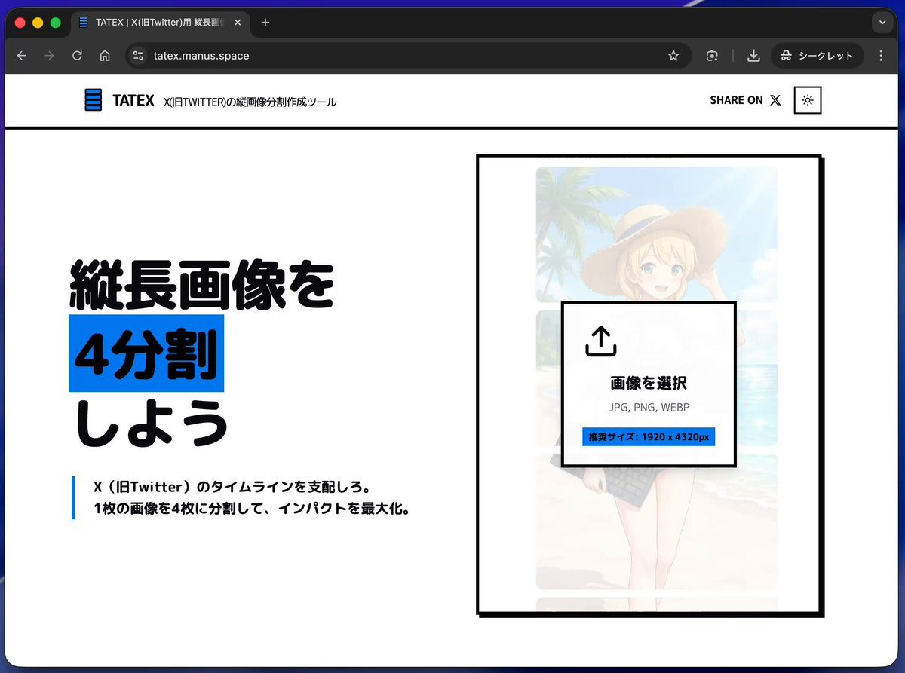
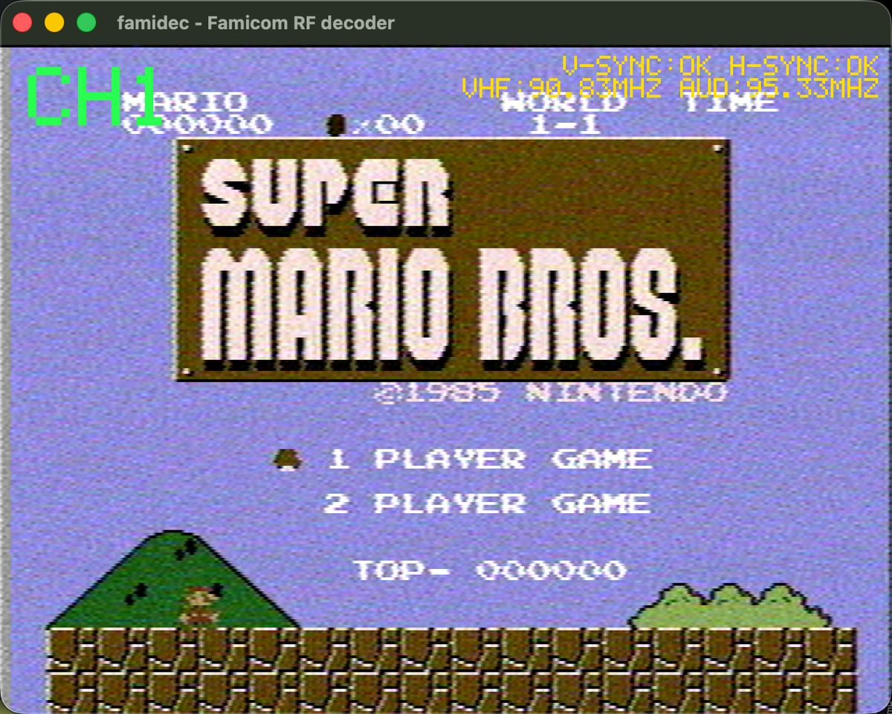
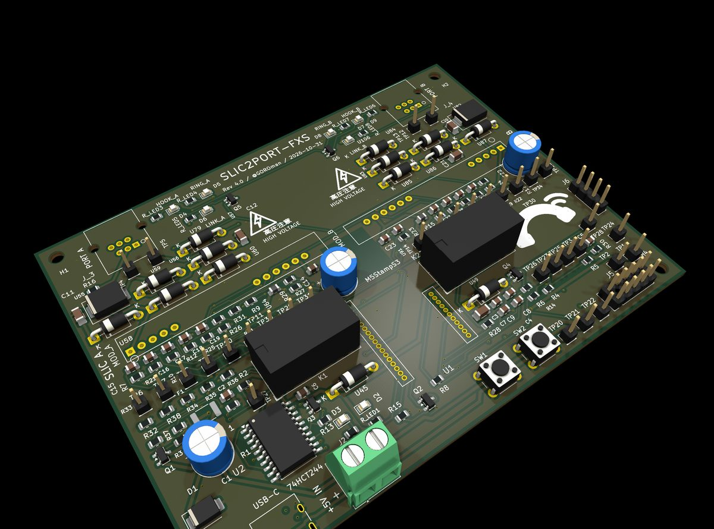

1988頃
GORO-NET
中学2年でホストプログラムを自作し開いたパソコン通信ホスト局。フロッピー破損で全データを失い、フルスクラッチで書き直して GORO-NET2 として復活。ものづくりの原点。
2013
Mikulus
Oculus Rift DK1 で初音ミクと会えるVRアプリ。日本のVR黎明期を代表する個人作となり、VRクリエイティブアワード2017 個人部門最優秀賞を受賞。

2013
MikuMikuAkushu（ミクミク握手）
感触デバイス＋シリコンの手模型で、VR内の初音ミクと実際に握手できるシステム。「一夜漬け」で完成し Oculus Festival in Japan で初披露。

2017
MRFamicom
ファミコンの世界を Mixed Reality で拡張する実験作。Maker Faire Tokyo 2017 に「KOALAB.」名義で出展した。
2018
著書『ミライのつくり方 2020-2045』
西田宗千佳との共著（星海社新書）。学生GOプロジェクトの原資にもなった代表著書。2020年に増補版『ミライをつくろう！』が出ている。
2018–2019
学生GOプロジェクト
自著の売上などを原資に学生へ Oculus Go を無償配布。2019年には Facebook 本社から預かった100台の配布をXで告知し、約1,260件のリプライが集まった。
2020
WASM MDXプレーヤー
X68000のMDX音楽形式をブラウザで再生するWebAssemblyプレーヤー。FM音源8ch＋ADPCM8chのビジュアライザー、Web MIDI対応。現行サイトでも稼働中。
2022
LiDAR搭載ドローン
iPhone 13 Pro Max の LiDAR と Insta360 Go2 を積んだ自作ドローン。「LiDAR搭載ドローンできた！！」と本人がXで報告した。



2024-05頃
TR-808 Cowbell回路未検証・進行中
TR-808のカウベル回路をサービスマニュアルから書き起こしたオープンソースハードウェア。書き起こしは完了、回路検証はこれから。

2025
AI-Mini4WD（しゃべるAIミニ四駆）
OpenAI Realtime API を ESP32系に載せ、音声で話せるAIミニ四駆。WebRTC Meetup Tokyo でLT登壇。



2026
famicom-rf-hackrf-decoder
実機ファミコンのRF出力をSDRで受け、NTSC-Jカラー復号をソフトウェアで行うデコーダ。CRTの歪みやノイズ、要望に応えた「テレビを叩くと直る」演出まで再現し海外メディアで話題に。


2026-10
SLIC基板（m5stamp-slic-fxs）
M5StampS3＋SLICモジュールで作る2ポートFXS回線シミュレータ／ミニPBX基板。公衆回線なしでFAX／モデムのテストができる自作基板。
2026-11
せっけんロボ ミューズ開発中
RDK X5 を使う2輪倒立振子ロボット。個人AIエージェント「せっけん」の身体として、バッテリー低下時の自動帰還を備える。RDK Challenge 2026 Winter 向け。
該当する作品がありません。検索語や年代を変えてみてください。